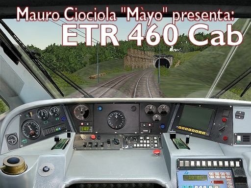

Mauro Ciociola ............"Màyo" creazioni grafiche e design |
presenta: |
Cabina per:
ETR 460 PENDOLINO di
Trenitalia
|
L' idea di fare la cabina per l'ETR 460 è nata nell'ambito del progetto "Alta Velocità", che vede come obiettivo la realizzazione dei principali elettrotreni veloci italiani dei nostri tempi. Mio incarico in questo progetto è appunto la realizzazione della cabine di guida di tali mezzi, e l'etr 460 è il primo della serie. La cabina è realizzata con textures fotografiche e si rifà al modello 460 che si differenzia nella strumentazione dagli etr 480 e 470. Con l'uscita degli altri mezzi realizzerò le altre cabine e con l'uscita dei mezzi affini all'etr 460 deriverò dalla cab del 460 le specifiche cabine per le altre varianti sopra citate. Questa cabina è studiata per funzionare al meglio sul nuovo ETR 460 di Salvatore Valese , ma può essere utilizzata anche sui precedenti modelli 3D di questo elettrotreno. |
Ringraziamenti e collaborazioni |
Per la realizzazione di questa cabina devo ringraziare come al solito il grande Renzo Omodei che ha regolato le lancette della strumentazione del banco e come al solito ha fornito anche il cvf digitale. Un ringraziamento doveroso va all'autore principale delle fotografie, Ernesto Imperato, che anche stavolta ha saputo realizzare un servizio fotografico ottimo per realizzare la riproduzione della cabina per il nostro simulatore. Grazie anche a Marco Bono ed agli altri autori delle fotografie che ho trovato in rete e mi sono servite per confrontare e studiare la conformazione della cabina. Ringrazio Salvatore Valese che ha realizzato un bellissimo modello di ETR 460 e mi ha commissionato questa cabina già agli albori del progetto. Spero di non aver dimenticato nessuno, nel caso, mi scuso in anticipo. |
Precisazioni sui comandi e sulla simulazione in TS |
Nella realizzazione di questa cabina ho cercato di rispettare il più possibile il reale posizionamento dei comandi. Faccio però alcune precisazioni: il TrainSimulator non è in grado di simulare determinati dispositivi, quindi, alcuni strumenti non sono riproducibili e se animati danno comunque informazioni errate. Si tratta quindi di prendere delle decisioni in merito: meglio far accendere delle spie in maniera errata, per il solo gusto di vederle accese in qualche modo o meglio evitare di animare quel determinato comando? meglio lasciare un indicatore analogico inattivo con la lancetta disegnata sullo sfondo e inanimata o meglio utilizzare quell'indicatore per altre informazioni che potrebbero essere utili al giocatore? Ognuno può preferire l'una o l'altra strada. Nella realizzazione di questa, e delle future cabine, cercherò, documentandomi, di posizionare le spie ed i comandi al posto di quelle reali, ma laddove qualche piccola "licenza" possa migliorare la qualità della simulazione e rendere più gradevole la cabina, non esiterò a spostare od omettere un comando o aggiungere qualche particolare che possa appunto apportare miglioramenti alla cabina. Cercherò, come sempre, di venire incontro alle esigenze del "giocatore" considerando che alcune informazioni degli strumenti di bordo indispensabili per il gioco non verranno a mancare, anche qualora il mezzo reale ne sia sprovvisto. Riguardo questa cabina segnalo che: La ripetizione segnali ha una novità: il giallo lampeggiante. Questo sistema è stato ideato, sperimentato e a me proposto da Luca Lazzazzera al quale va la paternità di questa idea. Avendo sperimentato con successo la riproduzione di questo tipo di segnale, ho deciso di applicarlo per la prima volta su questa cabina a seguito della sua proposta. Adesso la RS è davvero più realistica. Gli indicatori analogici non sono tutti attivabili come nella realtà poiché alcune misurazioni non sono contemplate da TS. Piuttosto che lasciare immobili e quindi inuti tali lancette abbiamo preferito, come di consueto, destinare alcuni quadranti ad altre misurazioni. I comandi di fischio e tromba sono settati correttamente, se non si dovessero sentire suoni, ciò è dovuto al sound della locomotiva e non alla cab. La sabbiera non è presente. La spia rossa frontale simmetrica rispetto alla spia dell'overspeed è stata settata da Renzo come indicatore di freno dinamico attivo in modo da ricordare al guidatore quando tale freno è inserito ed evitare errori di guida. Il monitor diagnostico si spegne all'avvio del treno. Come di consueto ho attivato il reset sul tasto dell'interruttore rapito, essendo quest'ultimo non simulabile in TS. Ricordo che, chiunque non gradisse alcuni tipi di indicazione o di comandi può sempre disattivarseli autonomamente sul proprio computer agendo sul cvf, o nel caso non fosse in grado di farlo, cancellando semplicemente il file ace della spia o del tasto in questione. Tali operazioni però devono essere effettuate esclusivamente sul proprio computer, per uso personale. Gradisco che le mie cabine siano sempre pubblicate così come le ho fornite io, al fine di evitare versioni non autorizzate, non funzionanti e che possano arrecare danni o disfunzioni al gioco.
|
Modalità di installazione |
Sono forniti con questa pubblicazione 4 cvf 2 in alias ( quindi predisposti per leggere la cabina dalla sottocartella ....<percorso>/trainset/Common.cab/CabETR460 ) e 2 diretti.- ETR460_alias ( CVF standard in alias DEFAULT )- ETR460_alias_dig ( CVF con digitali in alias )- ETR460 ( CVF standard diretto per cabine in cabview )- ETR460_dig ( CVF con digitali diretto per cabine in cabview )INSTALLAZIONE 'ALIAS'
(Procedura per la versione autonoma della cab pubblicata nella sez. cabine) |
Avvertenze |
Il tutto è stato testato e non riscontra problemi. Tutte le leve e i comandi sono funzionanti, tuttavia per qualsiasi eventuale problema non mi ritengo responsabile, ma potete contattarmi per eventuali precisazioni. |
Patch |
Ricordo che talvolta saranno disponibili patch correttive o migliorative delle mie cabine per correzioni tecniche o grafiche o per integrazioni successive alla pubblicazione. Invito pertanto a tenere sott'occhio tali pubblicazioni e di considerare attendibili e applicabili esclusivamente gli aggiornamenti emessi dal sottoscritto Mauro Ciociola o Renzo Omodei. Ogni altra patch non è autorizzata e ne sconsiglio l'applicazione.Diffido altresì dallo scaricare ed utilizzare cabine visibilmente derivate dalle mie originali non modificate o autorizzate dal sottoscritto ed invito eventualmente a denunciare la presenza in rete di tali copie al mio indirizzo email in modo da poterne verificare la provenienza. Purtroppo non tutte le persone sono oneste e rispettose del lavoro altrui, c'è chi, molto semplicemente crede di ottenere chissà quali soddisfazioni nell'appropriarsi di ciò che non sa fare e spacciarlo per proprio. Invito pertanto a maggior controllo gli amministratori ed i gestori dei siti che eventualmente ospiteranno questa ed altre cabine, mie e di altri onesti disegnatori. |
Lavori in collaborazione e richieste di cabine |
Ringrazio tutti coloro che si sono e si stanno affidando a me per la realizzazione delle cabine dei propri modelli. Cerco di accontentare un po' tutti anche se i lavori in corso di realizzazione sono molti, pertanto mi scuso per i tempi talvolta lunghi, ma quando si hanno più progetti in contemporanea diventa difficile portarli avanti contestualmente. In ogni modo grazie per la fiducia e la stima dimostratami. |
Altre mie realizzazioni disponibili in rete |
| - FS ETR 460 CAB - FS D 445 CAB - FS ETR 300/250 CAB Versione 2.0 - FS E 636- 077 XMPR repaint - FS E 636- 645 I serie CAB castana - FS E 402B Ver.3 CAB - FS E 444R Ver. 2 CAB - FS E 646 Ver. 4 CAB - FS E 646-041 livrea navetta, repaint - FS MDVC TE CAB Versione 2.0 - FS MDVC TD CAB Versione 2.0 - FS ETR 300/250 CAB release 1.1 con aggiornamenti cvf - FS ALe 501 Minuetto CAB - FS E 646 Ver.3 "Gold" CAB - FS MDVC TD CAB - FS MDVC TE CAB Revamping Alstom - FS MDVC TE CAB - FS E 444 tartaruga Versione 2.0 CAB - FS E 656 Versione 3.0 CAB - FS E 444R CAB - FS E 402b versione 2 CAB - FS E 551 Trifase CAB - FS E 652 CAB - FS E 633/632 CAB - FS E 402b CAB - FS E 636-284 "camilla" CAB - FS E 656 CAB - FS E 444 CAB - FS E 645 II Serie CAB - FS E 645 I Serie CAB - FS E 646 CAB - FS E 646 Versione 2.0 aggiornata. CAB - FS E 645 II serie Versione 2.0 aggiornata. CAB - FS E 424 riqualificata CAB - FS E 432 Trifase CAB - FS E 636 (repaint) "Ultima corsa" accantonata per amianto - FS E 636 "Ultima corsa" CAB (repaint) - FS ALn 556 CAB - FS Aln 668-1518 Satti - Carro Container Intermodale della Ambrogio Intermodal + (Nuove e numerosissime cabine in corso di realizzazione, presto disponibili on-line) |
Per eventuali comunicazioni, problemi riscontrati, richieste di ripubblicazione in pacchetto con i propri modelli 3d, collaborazioni o proposte di lavoro, potete contattarmi al seguente indirizzo: supermayo@libero.it |
Torino,
05/06/05 |
Anteprima della CABINA |
 |
Alcune parole riguardo pubblicazioni e correttezza |
REPAINT. Qualora voleste apportare delle modifiche alla cabina e pubblicare il vostro lavoro, vale la regola di sempre: contattate l'autore prima della pubblicazione, egli valuterà l'entità e l'importanza della modifica e sarà a sua discrezione avallare o meno la pubblicazione. Ricordate di includere sempre il o i readme originali insieme al vostro in caso di pubblicazione. Essi devono SEMPRE accompagnare il lavoro pubblicato qualora si tratti di un repaint. Repaint di "scarsa entità" sulle mie cabine (ritoccata una leva, modificata una texture ecc...) sono autorizzati esclusivamente ad "uso personale".Diffido altresì dallo scaricare ed utilizzare cabine visibilmente derivate dalle mie originali non modificate o autorizzate dal sottoscritto ed invito eventualmente a denunciare la presenza in rete di tali copie al mio indirizzo email in modo da poterne verificare la provenienza. Purtroppo non tutte le persone sono oneste e rispettose del lavoro altrui, c'è chi, molto semplicemente crede di ottenere chissà quali soddisfazioni nell'appropriarsi di ciò che non sa fare e spacciarlo per proprio. Invito pertanto a maggior controllo, gli amministratori ed i gestori dei siti che eventualmente ospiteranno questa ed altre cabine, mie e di altri onesti disegnatori. Ricordo agli utenti che il mio impegno è mirato ad incontrare il massimo dei consensi. La mia speranza è quella di produrre una qualcosa che piaccia al maggior numero possibile di voi, ma innanzitutto, deve piacere a me mentre lo realizzo. Qualora qualcuno di voi non dovesse gradire questa o altre mie realizzazioni, per un motivo o per un altro, è invitato a disinstallare semplicemente la cabina dal proprio computer e non utilizzarla. Io la metto a disposizione, ma nessuno è obbligato a usufruirne se non è di suo gradimento, così come nessuno è tenuto a disprezzare il lavoro altrui, per una questione di correttezza e di educazione. PER QUANTO RIGUARDA LA REALIZZAZIONE DEI FILES TENGO A SPECIFICARE ALCUNE COSE: PER QUANTO RIGUARDA LA DIFFUSIONE DEI MIEI FILES: -DURANTE LA CIRCOLAZIONE E LO SCAMBIO, I LAVORI NON DEVONO ESSERE MAI PRIVATI DEL RELATIVO README DELL'AUTORE E SOPRATTUTTO NON DEVONO ESSERE ATTRIBUITI A DIVERSA PERSONA. NON SI VINCE NIENTE! SPECIFICATO DALL'AUTORE, QUESTO PERCHE' E' GIUSTO CHE CHIUNQUE FORNISCA UN SERVIZIO DI SCAMBIO E DIFFUSIONE DEI FILES MEDIANTE SITI DEDICATI POSSA LIBERAMENTE DISTRIBUIRE I LAVORI. E' COMUNQUE, ANCHE IN QUESTO CASO, BUON COSTUME AVVISARE VIA EMAIL L'AUTORE PRIMA DELLA PUBBLICAZIONE SU UN NUOVO SITO. QUESTO PUO' SERVIRE ANCHE A RICEVERE IN SEGUITO I FILES DELLE NUOVE REALIZZAZIONI ED EVENTUALI AGGIORNAMENTI! |
Mauro Ciociola " Màyo" supermayo@libero.it |
Buon Viaggio! |